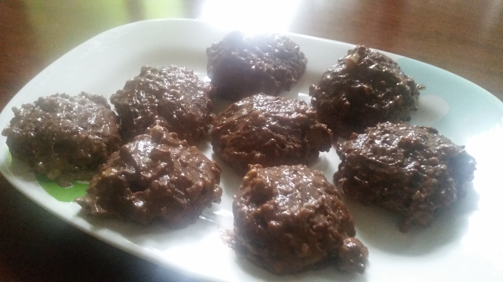

Facebook
Instagram
Twitter
Home
Ingredients
Equipment
Dishes
Stores
Dishes

Baked Cookies with Marshmallows
Baked Cupcakes with Banana Frosting
Baked Potato Wedges with Cheese Sauce
COPYRIGHT 2018 ALL RIGHTS RESERVED. THE FOODIE CRAFTSMAN. This website is for educational purposes only.
CONTACT US
Email: thefoodiecraftsman@gmail.com | Tel: +639178151032